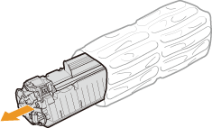
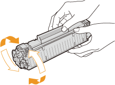
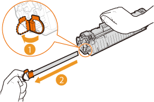
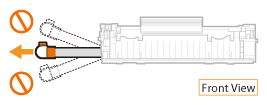

How to Replace Toner Cartridges
Before replacing a toner cartridge, read the precautions in Maintenance and Inspections and Consumables.
1
Close the auxiliary tray, and then open the top cover.

2
Remove the toner cartridge.

3
Remove the new toner cartridge from the protective bag.

4
Shake the toner cartridge 5 or 6 times as shown below to evenly distribute the toner inside the cartridge, and then place it on a flat surface.

5
Pull the sealing tape straight out.
The full length of the sealing tape is approximately 20 in. (50 cm).


When pulling out the sealing tape
If any sealing tape remains inside the toner cartridge, print quality may deteriorate.
Do not pull the sealing tape at an angle. If the sealing tape breaks, you may not be able to pull it out completely.

If the sealing tape becomes stuck when pulling it out, keep pulling until it is completely removed.
6
Replace the toner cartridge.

7
Close the top cover.